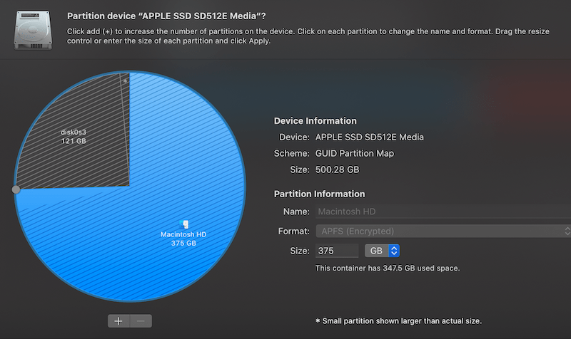

Installing NixOS on a MacBook Pro
In this blog post, I’m going to share how to install NixOS 21.11 on an early-2013 MacBook Pro.
The specs of the laptop are:
Model Identifier: MacBookPro10,1
Processor Name: Quad-Core Intel Core i7
Processor Speed: 2.7 GHz
Total Number of Cores: 4
Memory: 16 GB
Chipset Model: Intel HD Graphics 4000
Chipset Model: NVIDIA GeForce GT 650M
Wifi: Broadcom BCM4331The setup will dual-boot macOS and NixOS. This guide will show how to install the base system (without GUI) with a working wifi connection.
Creating a custom installation ISO
The NixOS installation CD doesn’t ship with any proprietary software, and is therefore missing the driver for the Broadcom BCM4331 wifi card.
To solve this problem, I decided to build a custom installation CD that is based on the NixOS minimal installation CD but with the required Broadcom drivers included.
VirtualBox
Building the custom image can’t be done on macOS, so we have to download the NixOS VirtualBox image appliance and import it into VirtualBox.
The NixOS VirtualBox image already includes the Guest Additions, which allow USB port forwarding (necessary to flash the resulting ISO on a USB drive) and clipboard sharing between host and guest.
When importing the OVA file into VirtualBox, make sure to increase the amount of CPU cores (the default is 1 core) to speed up the build process.
After starting the VM, we’ll notice that the text in KDE is too small due to the MacBook’s Retina screen. We can fix this by going to Settings -> System Settings -> Display and Monitor and setting the Global Scale to 200%.
To enable shared clipboard in VirtualBox, go to the menu bar and click on Devices -> Shared Clipboard -> Bidirectional.
Installation CD Nix configuration
Open the terminal (Konsole) and create a file called iso.nix with the following content:
{ config, pkgs, ... }:
{
imports = [
<nixpkgs/nixos/modules/installer/cd-dvd/installation-cd-minimal.nix>
<nixpkgs/nixos/modules/installer/cd-dvd/channel.nix>
];
nixpkgs.config.allowUnfree = true;
boot.kernelModules = [ "wl" ];
boot.extraModulePackages = [ config.boot.kernelPackages.broadcom_sta ];
boot.blacklistedKernelModules = [ "b43" "bcma" ];
}Note that vim is not installed by default. Either use nano or run nix-shell -p vim.
I’ve blacklisted the open-source Broadcom drivers since they would otherwise be loaded during boot and throw errors about unsupported hardware.
To build the ISO image, run the following command:
sudo nix-build '<nixpkgs/nixos>' -A config.system.build.isoImage -I nixos-config=iso.nixThe password is demo.
After the build process is finished, the ISO can be found in the result/iso/ directory:
result/iso/nixos-21.11.333823.96b4157790f-x86_64-linux.isoFlashing the ISO to a USB drive
Insert a FAT32 formatted USB drive and enable VirtualBox USB forwarding by clicking in the VirtualBox menubar under Devices -> USB -> Generic Mass Storage. A popup should show up in KDE with the option to mount the drive.
We need to find the interface name of our USB drive:
$ sudo fdisk -l
Disk /dev/sdb: 7.5 GiB, 8053063680 bytes, 15728640 sectors
Disk model: Flash Disk
...
Device Boot Start End Sectors Size Id Type
/dev/sdb1 2048 15728639 15726592 7.5G b W95 FAT32Look for Flash Disk. In my case, the interface name is /dev/sdb.
Copy the ISO image to the USB drive:
$ sudo dd if=result/iso/nixos-21.11.333823.96b4157790f-x86_64-linux.iso of=/dev/sdb bs=4M
191+1 records in
191+1 records out
803209216 bytes (803 MB, 766 MiB) copied, 68.3789 s, 11.7 MB/sAfter the process is finished, we can eject the USB drive and power off the VM:
eject /dev/sdb
poweroffCreating partitions
I used Disk Utility to shrink the macOS partition, and left one quarter of the available disk space for the NixOS system:

I then used gdisk (install with brew install gptfdisk) to create a root partition and a 4 GB swap partition for NixOS.
This is the initial partition layout before running any commands:
$ sudo gdisk /dev/sda
Command (? for help): p
Disk /dev/disk0: 977105060 sectors, 465.9 GiB
...
Total free space is 244346569 sectors (116.5 GiB)
Number Start (sector) End (sector) Size Code Name
1 40 409639 200.0 MiB EF00 EFI system partition
2 409640 732758463 349.2 GiB AF0A Macintosh HDTo create the root partition:
Command (? for help): n
Partition number (3-128, default 3):
First sector (34-977105026, default = 732758464) or {+-}size{KMGTP}:
Last sector (732758464-977105026, default = 977105026) or {+-}size{KMGTP}: -4G
Current type is AF00 (Apple HFS/HFS+)
Hex code or GUID (L to show codes, Enter = AF00): 8300
Changed type of partition to 'Linux filesystem'To create the swap partition:
Command (? for help): n
Partition number (4-128, default 4):
First sector (34-977105026, default = 968716424) or {+-}size{KMGTP}:
Last sector (968716424-977105026, default = 977105026) or {+-}size{KMGTP}:
Current type is AF00 (Apple HFS/HFS+)
Hex code or GUID (L to show codes, Enter = AF00): 8200
Changed type of partition to 'Linux swap'
The resulting layout should look like this:
Command (? for help): p
Disk /dev/disk0: 977105060 sectors, 465.9 GiB
...
Total free space is 11 sectors (5.5 KiB)
Number Start (sector) End (sector) Size Code Name
1 40 409639 200.0 MiB EF00 EFI system partition
2 409640 732758463 349.2 GiB AF0A Macintosh HD
3 732758464 968716418 112.5 GiB 8300 Linux filesystem
4 968716424 977105026 4.0 GiB 8200 Linux swapRemember the device name and the partition numbers, we’ll need them later during the NixOS installation when creating the file system. In my case, the root file system is at /dev/sda3 and swap is at /dev/sda4.
Installing rEFInd
To dual-boot macOS and NixOS, I’m using rEFInd as the EFI bootloader.
It can be downloaded from the rEFInd website as a binary zip file. After unpacking the file, we can install it by running the refind-install command:
$ ./refind-install
Not running as root; attempting to elevate privileges via sudo....
Password:
ShimSource is none
Installing rEFInd on macOS....
Installing rEFInd to the partition mounted at /Volumes/ESP
Found rEFInd installation in /Volumes/ESP/EFI/refind; upgrading it.
Found suspected Linux partition(s); installing ext4fs driver.
Installing driver for ext4 (ext4_x64.efi)
Copied rEFInd binary filesBoot into USB drive
To boot into the NixOS installation image, plug in the USB drive and restart the computer, then select the USB drive in the boot menu.
You’ll notice that the terminal font is very small (due to the retina screen). We can make it larger with:
setfont ter-v32nFormatting and mounting partitions
Next we need to format our partitions and mount them. I chose ext4 as a file system and used LUKS to encrypt the disk:
# format with luks and open the encrypted partition
cryptsetup luksFormat /dev/sda3
cryptsetup open /dev/sda3 nixosroot
# create filesystem
mkfs.ext4 /dev/mapper/nixosroot
# mount partition
mount /dev/mapper/nixosroot /mnt
mkdir /mnt/boot
mount /dev/sda1 /mnt/bootSet up the swap area and turn on swapping:
mkswap -L nixosswap /dev/sda4
swapon /dev/disk/by-label/nixosswapEnable Wifi Networking
We enable wifi networking since NixOS needs internet access for the installation.
In our custom installation image, the proprietary Broadcom wl kernel module will automatically load during boot. In the terminal we need to connect to a wifi network using wpa_supplicant:
# get the wifi interface name. for me it is `wlp4s0`
ip link
# connect to wifi network. replace `myssid` and `mypassword`
wpa_supplicant -B -i wlp4s0 -c <(wpa_passphrase "myssid" "mypassword")This will start wpa_supplicant as a background process. After we’ve installed the system we will set it up as a daemon.
NixOS installation
We generate a NixOS configuration file template:
nixos-gen --config --root /mntThen edit /mnt/etc/nixos/configuration.nix and add the following settings:
boot.loader.grub.enable = false;
boot.loader.systemd-boot.enable = true;
boot.loader.efi.canTouchEfiVariables = true;
# the default governor constantly runs all cores on max frequency
# schedutil will run at a lower frequency and boost when needed
powerManagement.cpuFreqGovernor = "schedutil";
# install wpa_supplicant
networking.wireless.enable = true;
# allow unfree packages (broadcom wifi drivers)
nixpkgs.config.allowUnfree = true;Start the installation:
nixos-installAfter the installation is done, we can reboot the system and select the new NixOS installation from the boot menu.
Wifi setup
After we’ve booted into our new system. we need to setup the wifi connection (again).
We can use the same command as before (minus the -B flag) and write it to the wpa_supplicant.conf file which will automatically get loaded when wpa_supplicant starts during boot:
wpa_supplicant -i wlp4s0 -c <(wpa_passphrase "myssid" "mypassword") >
/etc/wpa_supplicant.conf
systemctl restart wpa_supplicant.serviceConclusion
Installing NixOS on the MacBook Pro was a great learning experience and fairly easy to do.
Most things work fine out of the box. However, I’ve experienced significantly lower battery life and louder fans due to higher (~15C) CPU idle temperatures and not being able to switch GPUs on-demand (Nvidia GPU is always active). These problems are not specific to NixOS, I’ve experienced the same issues in other major distributions on this laptop.
Links
The following sites were very helpful when trying to install NixOS: